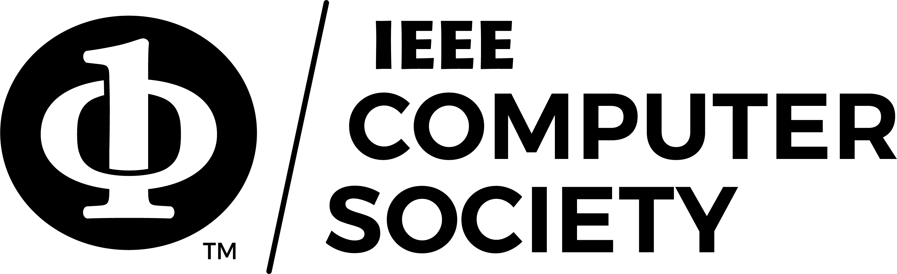

Latest News
-
Call for Paper is now available here: Here
-
The website for IEEE CIC/TPS/CogMI 2026 Co-located conference is live! To find past conference information, please visit Past Conference tab.
Internet has revolutionized the globalized society and enabled the growth of infrastructures, applications, and technologies that significantly enhance global interactions and collaborations that have significant impact on society. Unprecedented cyber-social, and cyber-physical infrastructures and systems that span geographic boundaries are possible because of the Internet and the growing number of collaboration enabling technologies. Individuals and organizations have increasingly relied on electronic and/or Internet-enabled collaboration between distributed teams of humans, computer applications, and/or autonomous robots to achieve higher productivity and produce collaboratively developed products that would have been impossible to develop without the contributions of multiple collaborators. Technology has evolved from standalone tools, to open systems supporting collaboration in multi-organizational settings, and from general purpose tools to specialized collaboration platforms. Future collaboration and Internet computing solutions that further the goal of achieving the full potential of global level collaboration require advancements in networking, technology and systems, user interfaces and interaction, cooperation and collaboration paradigms, and interoperation with application-specific components and tools. IEEE CIC has been conceived as the key multidisciplinary venue to serve as a premier international forum for discussion among academic and industrial researchers, practitioners, and students interested in Internet technologies, applications and services, collaborative networking, technology and systems, and applications. (For more Information, move to CFP)
▲ Keynote Speakers for IEEE CIC/CogMI/TPS 2025
Keynote Speakers (In Presentation Time Order):
Day 1: Nov. 12

Professor
Carnegie Mellon University, USA
Day/Time for Keynote Speech: Nov. 13

CVP and Managing Director, AI Frontiers, Microsoft Research, USA
Affiliated Faculty, University of Washington, USA
Day/Time for Keynote Speech: Nov. 12
Day 2: Nov. 13

Regents Professor
Arizona State University, USA
Day/Time for Keynote Speech: Nov. 13

Director, ARC Industrial Trasformation Research Hub for Future Digital Manufacturing, Australia
Professor, Swinburne University, Australia
Day/Time for Keynote Speech: Nov. 13
Day 3: Nov. 14

Founders Chair Professor
University of Texas at Dallas, USA
Day/Time for Keynote Speech: Nov. 14

▲ Plenary Panels for IEEE CIC/CogMI/TPS 2025
IEEE TPS Panel: Towards Building Trustworthy and Responsible Agentic AI
Date / Time : Day 1, Nov. 12, 2025Agentic AI has emerged as the next significant phase in the rapidly evolving field of AI, offering tremendous opportunities to solve real-world problems and address societal challenges through the use of autonomous agents that can augment and/or replace human efforts. Agentic AI shows potential to streamline and solve large-scale system and application challenges, support organizational missions, automate manufacturing and supply chain, and augment autonomous vehicles, among others. At the same time, as with the development of AI in general, agentic AI poses increasing issues of security, privacy, and trust, along with ethical and governance challenges.
This panel will discuss the challenges and R&D opportunities that need to be carefully addressed to establish a trustworthy and responsible Agentic AI ecosystem, which is critical for uplifting our society. Some of the key questions for discussion include:
- What are the key security, privacy, and trust challenges that need to be addressed towards establishing a trustworthy and responsible AI ecosystem? How can we establish ethical oversight and governance for agentic AI?
- How can trustworthy agentic AI be leveraged to address various socio-technological challenges (e.g., challenges in NextG, Cybersecurity and privacy, manufacturing and supply chain, healthcare, transportation, etc.)?
- How can Agentic AI exacerbate harm to our society, and at the same time, how can they be leveraged to increase the safety of our society?
- How do we foresee advances in trustworthy agentic AI evolving as Cyberspace evolves (e.g., digital economy, digital assets, quantum systems, etc.)?
Panel Moderator

Panelists (Last Names in Alphabetical Order)

Director, AI Division, Carnegie Mellon University Software Engineering Institute, USA
Founding Director, Emerging Technology Center, Carnegie Mellon University Software Engineering Institute, USA


Principal Research Staff Member, IBM Research, USA
Senior Manager of Granite Data Platforms, IBM Research, USA
IEEE CogMI Panel: From LLMs and Agentic AI to Artificial General Intelligence (AGI) to Artificial Superintelligence (ASI) – the Paths, The Prospects, and the Pitfalls
Date / Time : Day 2, Nov. 13, 2025The global race for AI dominance is here -- fueled by billions of dollars pumped into AI innovations by big tech companies and at the national level. This is fast outpacing the individual, organizational, and societal ability to absorb technologies for more controlled use to augment their capabilities, as well as the ability of governments and society to create appropriate oversight and governance. The academia that often conducts research unconstrained by business bottom lines and driven by curiosity and public impact is being left behind with ever-declining resources and capabilities to contribute to this AI race. Many AI experts have already opined about the potential dire consequences of the fast-paced development of AGI, leading to ASI. Geoffrey Hinton warns that there is a “10-20% chance that AI wipes out humans.” At least, as he further indicates, AI will make a “few people much richer and most people much poorer.”
This panel will discuss the paths, the prospects, and the pitfalls the our accelerated advances in AI towards ASI.
Panel Moderator

Panelists (Last Names in Alphabetical Order)


Inaugural VP and Chief AI Officer, George Mason University, USA
Associate Dean for Research & Professor, School of Computing, George Mason University, USA

IEEE CIC Panel: Device, Data and Collaboration – the Emerging Challenges in Internet of “Intelligent” Things
Date / Time : Day 3, Nov. 14, 2025The exponential growth of devices and increasing hyperconnectivity is creating explosive growth in data and potential for data-driven collaborations. Spurred by recent AI advances, similar growth in the Internet of “intelligent” Things has the potential to create socially-intelligent, collaborative ecosystems of systems and applications. Various domains such as manufacturing, supply chain, healthcare ecosystems, autonomous vehicular systems, and digital twin of complex systems can benefit significantly from ubiquitous and interconnected devices, data systems, and smart applications.
This panel will discuss the current and emerging landscape of Internet-enabled, AI-powered and data-driven collaborative ecosystems, as well as the growing challenges and opportunities that it brings.
Panel Moderator

Panelists (Last Names in Alphabetical Order)


Professor, University of Colorado, USA
Director, Colorado Center for Cyber Security, USA

Jaime Carbonell University Professor of Computer Science
Carnegie Mellon University, USA
Louis A. Beecherl Jr. Distinguished Professor & Executive Director of the Cyber Security Research and Education Institute
University of Texas at Dallas, USA
▲ Keynote Speakers for IEEE CIC/CogMI/TPS 2024
Keynote Speakers (Last Names in Alphabetical Order):

Distinguished Scientist & Research Lead at Google DeepMind
Google Inc, USA
Day/Time: Oct. 28, 2024 / 01:30 PM – 02:30 PM

Division Director, NSF Information and Intelligent Systems (IIS) Division
Professor, Brown University, USA
Day/Time: Oct. 29, 2024 / 8:45 AM – 9:45 AM

Professor
Georgia Institute of Technology, USA
Day/Time: Oct. 28, 2024 / 09:45 AM – 10:45 AM

Corporate Officer, Chief Digital Transformation Officer and General Manager
TDK Corporation, Tokyo, Japan
Day/Time: Oct. 29, 2024 / 02:00 PM – 03:00 PM

Executive Vice President for Research and Professor of Computer Science
Columbia University, USA
Day/Time: Oct. 28, 2024 / 08:45 AM – 09:45 AM
▲ Keynote Speakers for IEEE CIC/CogMI/TPS 2023
Keynote Speakers (Last Names in Alphabetical Order):


Assistant Director for Technology, Innovation and Partnerships
National Science Foundation (NSF), USA

▲ Keynote Speakers from Past Years
Conference Speakers of IEEE CIC/CogMI/TPS 2022


Conference Speakers of IEEE CIC/CogMI/TPS 2021

ACM Fellow, IEEE Fellow, Professor
University of California, Los Angeles, USA

Fellow & life member of AIAA, IEEE Fellow, W. Grafton and Lillian B. Wilkins Professor
University of Illinois Urbana-Champaign, USA


ACM Fellow, IEEE Fellow, Sohaib and Sara Abbasi Professor of CS and Willett Faculty Scholar
University of Illinois Urbana-Champaign, USA


Director, Quantum Hardware System Development
IBM Quantum, T. J. Watson Research Center, USA


Tutorial Speaker of IEEE CIC/CogMI/TPS 2021

Manager of AI Security and Privacy Solutions, Senior Research Scientist
IBM Almaden Research Center, USA
Conference Speakers of IEEE CIC/CogMI/TPS 2020

Professor, Past President of AAAI
Arizona State University, USA

Conference Speakers of IEEE CIC/CogMI/TPS 2019


Professor
Swiss Federal Institute of Technology Lausanne (EPFL), Switzerland


Conference Speakers of IEEE CIC 2018


Jonathan B. Postel Professor
University of California, Los Angeles, USA

Director, UMBC Center for Cybersecurity, Oros Family Professor and Chair
University of Maryland - Baltimore County, USA

Conference Speakers of IEEE CIC 2017

Distinguished Scientist, Director, Mobile & Networking Research
Microsoft Research, USA

Robert S. Pepper Distinguished Professor
University of California at Berkeley, USA


Professor, IBM Fellow
Tsinghua University, China / IBM Almaden Research Center, USA
Conference Speakers of IEEE CIC 2016
Jaime Carbonell University Professor of Computer Science
Carnegie Mellon University, USA

Barbara J. and Jerome R. Cox, Jr., Professor of Computer Science and Engineering
Washington University in St. Louis, USA

Chief Innovation Officer
University of Pittsburgh Medical Center, USA


William Eckhardt Distinguished Service Professor of Computer Science
University of Chicago, USA
Louise Comfort - The Dynamics of Risk: Changing Technologies, Complex Systems, and Collective Action

Professor, Director, Center for Disaster Management
University of Pittsburgh, USA
Conference Speakers of IEEE CIC 2015


Executive Director and Chief Scientist, Lutcher Brown Endowed Chair in Cyber Security, Professor of Computer Science
University of Texas at San Antonio, USA

Senior data scientist, Team leader, Big Data Lab of Baidu Research
Baidu Inc, China
▲ Plenary Panels for IEEE CIC/CogMI/TPS 2024
Plenary Panel 1: How Will Artificial Intelligence Reshape Scientific Research?
Date / Time : Oct. 28, 2024 / 02:30 PM – 04:30 PMPanel Moderator
Panelists (Last Names in Alphabetical Order)


Plenary Panel 2: Driving Innovations in Emerging Technologies: R&D Priorities and Funding Landscape
Date / Time : Oct. 30, 2024 / 10:15 AM – 12:15 PMPanel Moderator
Panelists (Last Names in Alphabetical Order)


Director, NITRD & Assistant Director, Networking and Information Technology at White House
NIST, USA


Associate Director, Emerging Technologies, Information Technology Laboratory
NIST, USA

Plenary Panel 3: AI vs AI – The Inevitable Next Cyber Frontier
Date / Time : Oct. 30, 2024 / 3:00 PM – 5:00 PMPanel Moderator
Panelists (Last Names in Alphabetical Order)


Director, UMBC Center for Cybersecurity & Acting Dean, College of Engineering and Information Technology
University of Maryland, Baltimore County (UMBC), USA

▲ Plenary Panels for IEEE CIC/CogMI/TPS 2023
Plenary Panel 1: AI Impact and Challenges in Industry and Government
Panel Moderator
Panelists (Last Names in Alphabetical Order)

Director & Distinguished Engineer, Enterprise Data & Governance for AI Models
IBM Research - Almaden San Jose, USA


Plenary Panel 2: Generative AI and Large Language Models: Research Impact and Open Challenges
Panel Moderator
Panelists (Last Names in Alphabetical Order)


Plenary Panel 3: Grand Challenges in Cyber Security and Privacy
Panel Moderator
Panelists (Last Names in Alphabetical Order)

Director, UMBC Center for Cybersecurity & Acting Dean, College of Engineering and Information Technology
University of Maryland, Baltimore County (UMBC), USA


▲ Invited Talks for IEEE CIC/CogMI/TPS 2024


Electronics Engineer, Team Lead
U.S. Army DEVCOM, Army Research Laboratory (ARL), USA

Full Professor, Associate Dean for Research & Graduate Studies
Howard University Data Science & Cybersecurity Center, USA


▲ Invited Talks for IEEE CIC/CogMI/TPS 2023
Speakers for IEEE CIC (Last Names in Alphabetical Order):


Speakers for IEEE TPS (Last Names in Alphabetical Order):


Speakers for IEEE CogMI (Last Names in Alphabetical Order):


Electronics Engineer, Team Lead
U.S. Army DEVCOM, Army Research Laboratory (ARL), USA


▲ Distinguished Lectures for IEEE CIC/CogMI/TPS 2023
Speakers for IEEE CIC (Last Names in Alphabetical Order):


Speakers for IEEE TPS (Last Names in Alphabetical Order):
Director, UMBC Center for Cybersecurity & Acting Dean, College of Engineering and Information Technology
University of Maryland, Baltimore County (UMBC), USA


Speakers for IEEE CogMI (Last Names in Alphabetical Order):


Equity, Diversity, and Inclusion are central to the goals of the IEEE Computer Society and all of its conferences. Equity at its heart is about removing barriers, biases, and obstacles that impede equal access and opportunity to succeed. Diversity is fundamentally about valuing human differences and recognizing diverse talents. Inclusion is the active engagement of Diversity and Equity.
A goal of the IEEE Computer Society is to foster an environment in which all individuals are entitled to participate in any IEEE Computer Society activity free of discrimination. For this reason, the IEEE Computer Society is firmly committed to team compositions in all sponsored activities, including but not limited to, technical committees, steering committees, conference organizations, standards committees, and ad hoc committees that display Equity, Diversity, and Inclusion.
IEEE Computer Society meetings, conferences and workshops must provide a welcoming, open and safe environment, that embraces the value of every person, regardless of race, color, sex, sexual orientation, gender identity or expression, age, marital status, religion, national origin, ancestry, or disability. All individuals are entitled to participate in any IEEE Computer Society activity free of discrimination, including harassment based on any of the above factors.
IEEE believes that science, technology, and engineering are fundamental human activities, for which openness, international collaboration, and the free flow of talent and ideas are essential. Its meetings, conferences, and other events seek to enable engaging, thought provoking conversations that support IEEE’s core mission of advancing technology for humanity. Accordingly, IEEE is committed to providing a safe, productive, and welcoming environment to all participants, including staff and vendors, at IEEE-related events.
IEEE has no tolerance for discrimination, harassment, or bullying in any form at IEEE-related events. All participants have the right to pursue shared interests without harassment or discrimination in an environment that supports diversity and inclusion. Participants are expected to adhere to these principles and respect the rights of others.
IEEE seeks to provide a secure environment at its events. Participants should report any behavior inconsistent with the principles outlined here, to on site staff, security or venue personnel, or to eventconduct@ieee.org
Financial Sponsors
-

Co-located Workshops
- 📎 Equitable & Inclusive Computing Workshop 2026 (EIC WORKSHOP 2026)
- More workshops to be announced.
Co-located Conferences
- 📎 The 12th IEEE International Conference on Collaboration and Internet Computing (IEEE CIC 2026)
- 📎 The 8th IEEE International Conference on Trust, Privacy and Security in Intelligent Systems, and Applications (IEEE TPS 2026)
- 📎 The 8th IEEE International Conference on Cognitive Machine Intelligence (IEEE CogMI 2026)
- 📎 The 1st IEEE International Conference on Resilience and Integrated Security for Space and Critical Systems (IEEE RISC 2026)